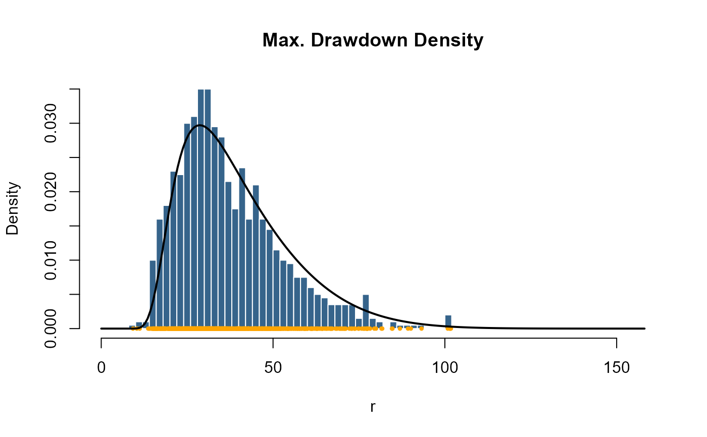
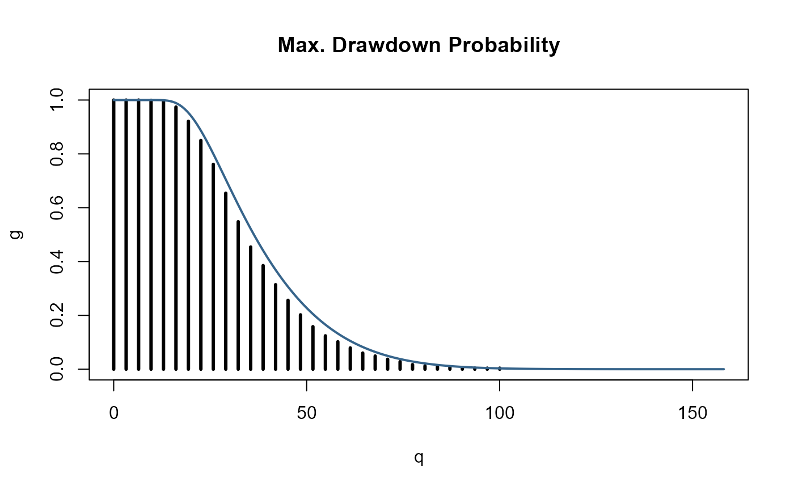

Drawdown statistics
stats-maxdd.RdA collection of functions which compute drawdown statistics. Included are density, distribution function, and random generation for the maximum drawdown distribution. In addition the expectation of drawdowns for Brownian motion can be computed.
Usage
dmaxdd(x, sd = 1, horizon = 100, N = 1000)
pmaxdd(q, sd = 1, horizon = 100, N = 1000)
rmaxdd(n, mean = 0, sd = 1, horizon = 100)
maxddStats(mean = 0, sd = 1, horizon = 1000)Arguments
- x, q
a numeric vector of quantiles.
- n
an integer value, the number of observations.
- mean, sd
two numeric values, the mean and standard deviation.
- horizon
an integer value, the (run time) horizon of the investor.
- N
an integer value, the precession index for summations. Before you change this value please inspect Magdon-Ismail et. al. (2003).
Details
dmaxdd computes the density function of the maximum drawdown
distribution. pmaxdd computes the distribution function.
rmaxdd generates random numbers from that distribution.
maxddStats computes the expectation of drawdowns.
dmaxdd returns for a trendless Brownian process mean=0
and standard deviation "sd"
the density from
the probability that the maximum drawdown "D" is larger or equal to
"h" in the interval [0,T], where "T" denotes the time horizon
of the investor.
pmaxdd returns for a trendless Brownian process mean=0
and standard deviation "sd"
the probability that the maximum drawdown "D" is larger or equal to
"h" in the interval [0,T], where "T" denotes the time horizon
of the investor.
rmaxdd returns for a Brownian Motion process with mean
mean and standard deviation sd random variates of
maximum drawdowns.
maxddStats returns the expected value, E[D], of maximum
drawdowns of Brownian Motion for a given drift mean, variance
sd, and runtime horizon of the Brownian Motion process.
References
Magdon-Ismail M., Atiya A.F., Pratap A., Abu-Mostafa Y.S. (2003); On the Maximum Drawdown of a Brownian Motion, Preprint, CalTech, Pasadena USA, p. 24.
Examples
## rmaxdd
## Set a random seed
set.seed(1953)
## horizon of the investor, time T
horizon <- 1000
## number of MC samples, N -> infinity
samples <- 1000
## Range of expected Drawdons
xlim <- c(0, 5) * sqrt(horizon)
## Plot Histogram of Simulated Max Drawdowns:
r <- rmaxdd(n = samples, mean = 0, sd = 1, horizon = horizon)
hist(x = r, n = 40, probability = TRUE, xlim = xlim,
col = "steelblue4", border = "white", main = "Max. Drawdown Density")
points(r, rep(0, samples), pch = 20, col = "orange", cex = 0.7)
## dmaxdd
x <- seq(0, xlim[2], length = 200)
d <- dmaxdd(x = x, sd = 1, horizon = horizon, N = 1000)
lines(x, d, lwd = 2)

## pmaxdd
## Count Frequencies of Drawdowns Greater or Equal to "h":
n <- 50
x <- seq(0, xlim[2], length = n)
g <- rep(0, times = n)
for (i in 1:n)
g[i] <- length (r[r > x[i]]) / samples
plot(x, g, type ="h", lwd = 3,
xlab = "q", main = "Max. Drawdown Probability")
## Compare with True Probability "G_D(h)":
x <- seq(0, xlim[2], length = 5*n)
p <- pmaxdd(q = x, sd = 1, horizon = horizon, N = 5000)
lines(x, p, lwd = 2, col="steelblue4")

## maxddStats
## Compute expectation Value E[D]:
maxddStats(mean = -0.5, sd = 1, horizon = 10^(1:4))
#> [1] 6.841696 52.000000 502.000000 5002.000000
maxddStats(mean = 0.0, sd = 1, horizon = 10^(1:4))
#> [1] 3.963327 12.533141 39.633273 125.331414
maxddStats(mean = 0.5, sd = 1, horizon = 10^(1:4))
#> [1] 2.529253 4.566413 6.809237 9.101853